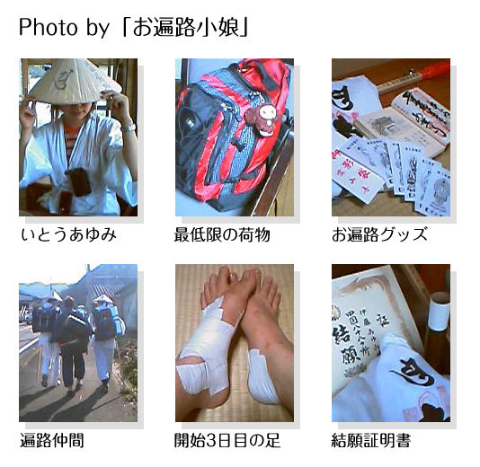

| お遍路小娘 | |
| いとうあゆみ | |
| (2013) | |
四国遍路とは
弘法大師空海が修行したと言われる四国八十八ヶ所のお寺を巡ること。
お寺は「札所」「霊場」「○番さん」などと呼ばれる。お参り出来る時間は朝7時から夕方5時まで。
また巡礼することを「打つ」、全てのお寺を巡礼しきることを「結願」「満願」と言う。
四県の道場
人生に例え、徳島は「発心」、高知は「修行」、愛媛は「菩提」、香川は「涅槃」の道場と呼ばれる。
方法
徒歩／自転車／車／ツアーなど。
また、徒歩でも毎日宿に泊まるか、野宿するか、など希望や予算に応じて方法は人様々。
宿泊
遍路道沿いにある宿を主に利用。遍路宿などと呼ばれる。地図を見ながら、毎日どの辺りまで進めるか検討をつけて予約を入れる。
NPOや善意で運営されている善根宿と呼ばれる施設もある。
お接待
お遍路さんを支援する風習。
道中で食べ物やお賽銭代などをいただいたり、その形は様々。
お遍路をする人は「お大師様と同じ」という考えから、「私の代わりにお参りしてください」という代参を託す意味や、その行為自体が功徳となるとも考えられている。
しかしそのお接待だけを目当てにするお遍路さんも増えていることもあり、問題となるケースも。
楽じゃない旅
高校を卒業してすぐに、故郷の山形から進学のために上京し、20歳で仕事に就いた。
その頃の私は本当に田舎者で、右も左も分からず、よく人に騙されるような小娘だった。
お遍路に出たのは、一人暮らしのアパートのトラブルで住む所を無くし、1月3万円光熱費込みのシェアハウスに転がり込んでいた頃。
日本人は勿論、外国籍の人も沢山居て、キッチン、トイレ、シャワーはすべて共有の、刺激的な生活。
流れ着いた結果ではあったが、都会のひとりは寂しかったし、楽しんで生活していたと思う。
でもプライベートの無い状態に少し疲れ、そのうち好きで就いたわけではなかった仕事も辞めてしまった。
上京して4年、まだ22歳だった。
シェアハウスの仲間は環境柄、旅好きが多く
「仕事辞めたの？旅行しなよ！」
と気軽に勧めてくる。
母にも仕事を辞めたことを電話で告げると
「旅行〜？まさかお遍路とか〜？」
なんて冗談まじりに言って来た。
お遍路、四国八十八ヶ所。
すべて周れば願いが叶うという1200キロの旅。
この旅を意識したことは今まで一度もなかった。第一とても辛そうなんである。
でも、なんとなく「今までやったことないこと、一生懸命にならないと手に入らなそうなもの」がそこにある気がした。
「楽じゃない旅」も悪くないかもしれないと、ふと思った。
だから、なんとも単純なことに、この母の気軽な一言で、私はとくに深く考えず四国遍路に旅立つことを決めた。
しかも、なけなしの貯金をすべてはたいて。
そんな行き当たりばったりな性格なので、父にはかなり叱られたが、決めたら絶対実行しないと気が済まない性格の私は、空席があった一番近い日取り、1週間後の徳島駅行きバスチケットを予約する。
つまり、思いついてから出発までのカウントダウンが7日ということになった。
まず日々の進捗をネット上に記録するために、お遍路ブログを立ち上げた。（「お遍路小娘
」）
それから旅先でいつでもお金が降ろせるよう郵便貯金の口座を開き、シェアハウスの皆に色んな物を借りた。リュック、ジャージ、護身用バタフライナイフ...四国の遍路旅に、皆は興味津々だった。
一方私は、勢いで決めた後にその大変さを知ったので、とてもナーバスだった。
今まで運動なんてからっきしの完全文系人間だったのに、挑戦できそうな手段は主に徒歩、終わるまで、何日かかるかも検討がつかない。
でもそんな不安とは関係なく、すぐに出発の時は来た。
2、3日ではあるが取ってつけたようなウォーキングのトレーニングなんかもして、私は2004年の10月10日、品川発徳島行きの夜行バスに乗り込んだ。
違和感バリバリの初日
バスは予定より早く徳島駅に着いた。朝6時50分。
寒くもなく暑くもなく、よく晴れた日だった。慣れない長距離バスの寝不足と緊張で少し吐き気はしたが、ルームメイトから貰っていたカロリーメイトで朝食を採る。
そして、まず1番札所のある坂東駅までの電車に乗る。
数週間前まで毎朝乗っていたすし詰め状態の田園都市線とは全く異なる、がらんとした車内。
30分程で坂東駅に到着。思いのほか静かで、人気は無く、少しだけ拍子抜けした。
初日であるこの日は、ウォーミングアップの意味も込め、寺と寺の距離の近い1番札所「霊山寺」から2番、3番と続け、6番札所「安楽寺」までを歩く予定。
トータル20km程の距離だ。
駅から徒歩10分程で、すぐに1番札所「霊山寺」は見えて来た。
付近には、お遍路さん用グッズを各種取り揃えた売店がそこかしこに見られ、やっとそこで「これからお遍路を始めます」的な、軽い装備をした新米お遍路さんを少し発見。
例に漏れず私もそこで軽く装備を整える。
白装束に袖を通し、菅笠を被り、杖を持つ...全然、サマになって居ないけど、私の遍路旅のスタートだ。
今日まで、お寺をまじまじと見回したことの無かった私は、この時とても場違いな空気を放っていたように思う。
まずはガイドブック通り、周囲のお遍路さんの様子を伺いつつ、水屋で手と口を清める。
そして自分の住所と名前を書いた「納札」を納め、ロウソク、線香、お賽銭をあげ、お経を読む。これを「本堂」と「大師堂」の二カ所で繰り返し、最後に「納経所」で「納経」をしてもらう。このお寺に来ましたよ、という印みたいなものだ。
もちろんすべてはガイドブックから学んだり、周囲の様子を伺いながらの見よう見まねである。
全然、自分の居場所じゃないような違和感とぎこちなさ。
ノリの効いた新品の白装束と、慣れない作業が違和感バリバリの初日だった。
夜は6番札所「安楽寺」に併設されている宿坊にお世話に。
年配の団体客が多く、大広間でたったひとり美しく盛られた夕飯を食べるのが寂しかったのを覚えている。
寝る前に、明日のルートの予定を立てていると、身体が勝手に震えて来た。意気込んで出て来た旅なのに、心細くて、怖くてたまらなかった。
大きな不安要素は、12番札所「焼山寺」への挑戦...ガイドブックや、口コミで「序盤にして最大の難関」と呼ばれている山寺。
大抵のお遍路さんは順調に行けば3日目にそこを目指すと言うが、私にも無事登り切ることが出来るのだろうか...
未知の恐怖が波のように押し寄せて、どうにか心を落ち着けるためにお経を読んでみる。
都合の良い神頼み...でも不思議と、般若心経を声に出して読んでいるうちに震えがおさまった。
分散していた感情が、ひとつにまとまったような感じ。
深呼吸、きっと大丈夫。
絵に描いたような風来坊
朝6時、携帯のアラームが鳴る。
そして自分がいつものベッドではなく、個室の布団に寝ていたことに気付き、はっとする。
そうだ、四国に来ていたんだった。
歩きは朝7時からスタート。
昨日のペースを逆算してみると、時速2.6キロだったことがわかり、少しのんびり過ぎたかもと速度を上げてみる。
この日も晴れ、気温も暑すぎず歩くにはとても条件のいい日だが、喉がすぐに乾いた。
「ああ、あれじゃ持たないね...」
自販機の前でスポーツ飲料を一気飲みしている私に、ちょうど同じタイミングで休憩しに来た中年の男性遍路は厳しい顔をして言った。
男性の視線の先には、小柄なおじいさん遍路。
確かに彼の荷物は、体格に似合わず重量感を感じさせるもので、今にもバランスを崩しそう。
歩き遍路は荷物の重さが命取りとなる場合がある。私も本当に必要なものだけをリュックに詰めて重量は5kg弱、それでもずっと背負い続けて歩くのは、なかなか身体に堪えるものだった。
おじいさん遍路は、すれ違い様お辞儀をしてみるも、世間話は無用、とばかり目もくれず寡黙に前へ進んで行った。杖をつくたびかすかに鳴りながら遠のいていく鈴の音と、荷に背負われているかのような後姿が寂しく印象的だった。
こちらも他人に干渉している場合ではなく、慣れない旅路に戸惑うことばかり。自分の歩きのペースが分からなく、心だけが先走る。
はっきりしていることは、3日目の明日、朝一番に12番札所「焼山寺」を目指すために、今日中に11番札所「藤井寺」に到着していなければならないということ。
皆から難所と恐れられている「焼山寺」は「遍路ころがし」とも呼ばれ、そこでリタイアする人も少なくないそうだ。
今日はその手前までの25kmほどを歩く予定。ムリの無い距離と言われているが、やはり不安の方が断然強く、最初の頃の私はほとんど笑っていなかったような気がする。
「風が気持ち良いですよ」
青く広がる田園風景の中、ガードレールに手をかけ、青甚平の彼は深呼吸をしていた。
特筆すべきはその風貌、ちょんまげ頭に肩かけの大きなカバンと寝袋、どこからへし折ったか、拾って来たのか、無骨な棒切れを杖にしている。歳は30代前半といったところ。
まさに、絵に描いたような風来坊。
「ええ、良い天気ですよね」
内心、変な人...と思いながらも愛想笑いを返した後、私はすぐにその場を後にしたのだが、何度か振り返っても彼はずっとそこでボーっと空を眺めていた。
そして午後3時過ぎ、この日の最終目的地11番札所で私はまた彼に遭遇したのである。どうして。彼はあの時あんなにノンビリ休憩していたのに。いつの間にか、追い越されていたらしい。
青甚平の彼を見送った後、参拝を終え、しばらく境内で休憩をしていると、聞き覚えのある鈴の音。
札所の入り口の階段を上り、門をくぐって現れたのは、午前中にすれ違った、大きな荷物を背負ったあのおじいさん。
「やっと着いたぁ...。」
疲れ果てたその様子から、高齢になってから何かに、特に体力を使うことに挑戦するのはそう簡単なことではないということが見て取れた。
それでも頑張ってお寺に着いた時の、何か今日1日の目的を達成したぞという満足と安堵の表情は、私の目頭を熱くさせた。
ただ黙って歩き続けていたおじいさんの、その様子はさっきすごく悲しそうに見えたのに、ほっとした時に漏れた苦しそうな笑顔は、人って頑張った後すごく気持ち良くなるんだ、というのを実感させるものだった。
こうして私の2日目は終わった。
明日はとうとう「焼山寺」。
昨日より今日が一番
難所12番札所「焼山寺」越えに備え、朝5時に起床。
身支度を済ませ6時、緊張を振り切るために、まだ日も昇り切らぬうち歩き出すことにした。
早朝の空気は凛と澄んで、深呼吸すると肺の奥まで届いて、ひんやりと心地よい。そんな風に感じたの、いつぶりだろう。
宿から「焼山寺」までの距離はおよそ13キロ。
距離にしてはそこまででもないが、無事に越えられるかどうかで今後が決まる、私にとっての運試しへ、いざ入山。
さて、どんだけキツイものか見てみようではないかと歩いてみると、案外普通の山道...？と思ったのは、ほんの束の間。
上れど上れど坂は続き、台風の影響なのか倒木があちこちに散乱し、かなり道が悪い。
まだ誰も入山していないらしく、夜に張った蜘蛛の巣がそのまま顔に張り付く。それを杖で振り払いながらなんとか進むが、ものの30分で見事に息切れ...。
平地で歩くのと違ってかなり自分のペースが掴みづらく、気を抜いた瞬間に、朝露に濡れた岩場で転んで左足を少し捻った。
「いったぁ...」
静まり返った山の中でひとり、都会暮らしに慣れ切っていた自分を情けなく思って早くも泣きそうになっていると、のんきな口笛が遠くから聞こえてきた。
「あれっ、一番乗りだと思ったのに〜」
声の主は、昨日出会った青甚平の彼だった。
お遍路さんの目的地は皆同じだから、同じ人と道中にまた会うことも珍しくはない。
私にとって、彼がその最初の一人である。
しかし、目的は同じでも歩くスピードは人それぞれ、何度も会う人も居れば、それきりの人も。
泊まる場所や、なんとなくの休憩でタイミングはどんどん重なったりずれたりするもの。
歩いてみると分かるが、荷物を背負った状態で自分と同じペースで歩ける人って、意外と少ない。
そういった偶然の中、何度も同じ人と出会うとしたら、それが『縁』だと、私はこの旅で教わった。
「俺、この杖海で拾って来たんだ」
「やっぱり。最初から変な人だと思ってた...」
たわいもないコミュニケーションで、身体が目を覚まして行くのが分かる。だけどひとまずここは、少しの会話の後に、私を置いて彼は先へと進んで行った。

再び孤独な道のりを休み休み歩く。この日初めて気がついたのは、私は上り坂がとてつもなく苦手だということ。
下り坂も平地も、たいした疲労は感じないのに、上りだけは少し進んだだけで息切れしてしまう。
自分の頭の辺りまであった杖が、既に随分磨り減っていた。
開始から約3時間ほどで、ようやく中間地点の休憩ポイント「柳水庵」に到着。
上りで手持ちのスポーツ飲料が大分減って来ていたので、湧き水があるのがとてもありがたい。
荷物を降ろし、ペットボトルに水を詰めて、ストレッチをして、ちょっとだけ休憩...。
四国遍路は、昔はこのような道しるべは勿論、整備された道も無く、弘法大師を敬う人、口減らしのため帰る場所を失った人、不治の病に侵された人が死ぬまで歩き続けた道だったそう。
その名残で、今もお遍路さんは白装束を羽織っている。これは死装束でもあり、菅笠や杖は、それぞれ棺桶、墓石を意味すると聞いた。
今は至る所に道しるべ。決して自分が自分の力だけで歩いているわけではないということが分かる。
後半はゴツゴツしたむき出しの岩が多く、杖で次の足場を押さえては、力を入れて一歩一歩をよじ登るように進んだが、それでもある程度は整備されていた。
これが果たして、昔はどれだけ大変なことだったのか...。
そして出発から約5時間後、ついに私は「焼山寺」に辿り着いた。
誰もが「つらいつらい」と言うこの難所を無事に乗り切ったという達成感は、疲れを忘れさせる。
昨日より一昨日より、今日が一番気持ち良い。
私にも...出来た...
炭酸を一気飲みした時みたいな、ジュワーっとした痛いくらいの爽快感に包まれ、しばらく参拝も忘れその場に立ち尽くしていた。

ひとりのご飯は寂しい
ここ数日の運動の影響から、全身筋肉痛となって迎えた朝。
左足の土踏まずが酷く傷むことに気付く。これは恐らく、昨日岩場で転んだ時のものだ。
お遍路はちょっとした油断がリタイアのきっかけになると言う。
その証拠に昨日も、屈強な消防団員が焼山寺越えの後に足を壊し、この旅を諦めたと宿の方から伺った。
シップとテーピングでなんとか歩けそうにはなったものの、私のような、今までロクに運動もしてこなかった人間がゴールに到達できるのかとても不安になった。
この日は13番札所「大日寺」より、17番札所「井戸寺」まで、徳島市内を目指す予定。
しばらくは、鮎喰川沿いの綺麗な景色を眺めながら歩いていたが、徳島市に近づくにつれそのような道はもう無くなり、アスファルトだけが延々と続いた。
13番札所で無事に納経も終え寺を出発しようとすると、見覚えのあるリュックがベンチに。
「あーっ」
その主は昨日同じ宿に泊まった、しかもなんと14歳という若さの男子だった。
近所で頂いたのか、みかんを両手に抱えながらマイペースに歩く14歳の彼と、シップが効いているうちになるべく沢山の距離を稼ぎたい、不安を忘れたい...そんな思いでいそいそ歩く私は、その後何度もすれ違う。
私にとってのハイペースは、彼にとってのスローペース。正直男の人の体力には敵わなくて、なんだか悔しい...。
予定の札所を全て打ち終え、なんとなく時計を見るとそろそろ夕暮れ時に差し掛かっていたので、適当なビジネスホテルへチェックイン。
ずっと山や川や田んぼ沿いを歩いてきたこともあって、アスファルトの硬さや、車の排気ガスが気になった1日。
少し立ち止まるだけで左足の痛みが復活して動きが鈍ってしまうので、痛みをごまかすようにほとんど休憩を取らなかった。
だから宿に着いた瞬間、どっと疲労感が出た。
夕食をとろうと街へ出るも、知らない街で気軽に入れる店が見当たらず、ひとりのご飯は寂しいなどといった、しょうもない弱音をブログに書き込むと
「帰ってきたらみんなで飯食おう」
シェアハウスの仲間からの返信に、思わず涙がこぼれた。
お接待という風習
一昨日の山での無理が祟ってか、身体が重く、疲労感が強い。
やはり大した身体づくりもしないで出てきたのが間違いだったか...。
だけど、今日も朝を迎えた。
痛む左足はしっかりテーピングで固定し、朝6時前、夕焼けのような朝焼けを背にホテルを出発。
徳島市内を後にし、小松島市へ...
遍路道を歩いていて気付いたのが、水分と、非常食だけは常に持ち合わせておかないと危険なことになりかねないということ。
お腹が空いていないからと一度お店を通り過ぎてしまうと、次はもう何kmも先まで歩かなければ見つからないなんていうこともある。
この日はまさしくそのパターン。昼を過ぎても何も食べれず空腹状態で2時間以上さまよって、ようやく小さなお店を発見することが出来、ほっとした。
四国遍路には「お接待」という習慣が昔から根付いている。
「お接待」とは、お遍路さんに地元の方が食べ物やお賽銭をくださる風習で、「行けない私の分までお参り下さい」という代参の意味でもあったりするらしく、もしご好意を受けた場合は素直に応じた方が良いと言われている、歩き遍路にとっては大変にありがたい行為。
食堂ではおじいさんやおばあさん達がうどんやスイカや羊羹やら、大量の食事でその「お接待」をしてくださった。
しばらくして昨日何度もすれ違った14歳の子も、案の定、空腹の状態で現れた。
少年H君。
思えばこの旅5日目にして初めて、誰かの名前を聞いた気がする。
根性を試す根性
この頃私は、四国まで来て何に追われていたんだろう。とにかく毎日、一刻も早く先へと急いでいた。
現実問題、お遍路には結構なお金がかかる。その一番が宿代。
お遍路さんは通常、寺間に点在する宿を利用するが、宿泊費は通常一泊4000〜7000円程で、これが普通の22歳にとって痛くないわけがない。
結願までは平均40日かかるとも言われているため、単純に計算しただけでもこの旅がいかにお金のかかるものであるかわかる。
そのため野宿をメインとし、数日に1度宿を利用するというお遍路さんも多い。
しかし私は一応女、人より強い自信も無いため野宿は避けていた。
また、善意で宿を提供してくださる場所もあるが、数は多くない。
だからいつも、自分が頑張って早く進めさえすれば、結願まで日数もかからずに済む、そうすれば全体的な出費が抑えられると、焦ってばかりいた。
それから、3日前に越えた遍路ころがしの「焼山寺」で、少しの間青甚平さんと歩いた時
「きみは人が苦手そうだよね」
と言われていた。
実際、私は本当は人間関係が苦手で、人見知りだった。
お遍路に出る人は、それぞれ様々な理由を抱えていると聞いていたので、余計に躊躇する部分もあったと思う。
青甚平の人に、もしもまた会うことがあれば、今度は名前を聞いてみようか。
そんなわけで、旅自体を楽しんだり、周りを見たりせず、突っ走っていることだけは実感があった。
だけど、それを止めてくれる人もきっかけも無く、この日も私は相変わらず傷む左足を騙し、夜明け前、5時半には宿を出発していた。
「ねえ、カノジョひとり？コレ、俺の連絡先なんだけど。」
「は、カノジョ？」
1日の巡礼を終え、宿に向かうのみとなった夕方手前、強引に納札を渡して来た坊主の男性遍路。
納札とは写真のようなお札で、お遍路さんはこれに住所や願い事を叶えてお寺に納めるのだが、お接待を受けた場合や連絡先の交換などに使う場合もある。
「名前なんて言うの？何で若いのに遍路してるん？」
「今ちょっと急いでるんで〜...」
なんだこれは。これじゃ渋谷と変わらない。厄介なナンパ小僧を振り払い、ちょうど良いタイミングでやってきた少年Hと連れ立つ。
遍路が修行の道だとしても、人の業は計り知れないし、わりと人生そのものと言った感じかもしれない。
この後私たちは山の中で完全に日没を迎えてしまったため、この日の写真はこれ以降もう無い。
完全に計算ミスだった。灯りの無い山は、自分の目が見えなくなったんじゃないかと思うほど、真っ暗だ。
運良く少年Hがヘッドライトを持ってくれていたため、なんとか宿に到着することができたが、チェックイン時にはもう言葉数少なく、左足だけでなく、身体全体が完全にバテつつあった。
私自身は朝の5時台から夜の7時まで、13時間以上ほぼぶっ通しで歩いていたし、もはや何がこれだけ自分を動かすのかよくわからない状態。
でもどうしてももっと距離を進めたいと、この時は思っていた。そして明日の朝食をキャンセルし、少年Hより1時間以上早く出発することを心に決めた。
歩こうと思えば歩けたからだ。
しかし少年Hは荷物も非常に重く、足枷を着けて歩いていたのもあって、足を痛めていた。
これからは少しペースを落として歩いていくと言う。
だからここで少年Hとはお別れだ。
夜寝る前に、名残惜しくて色々話をした。
「私は、ほんとは根性無しなんだ。今まで、本気で一生懸命何かしたことって無い気がする」
街灯の無い海沿いのその宿の窓からは、満天の星空が覗いて見えた。
彼がこの時私に言ってくれた言葉は今でも胸に残っている。
「でもこの旅を実行に移した時点で、自分の根性を試すだけの根性はあるんだよ」
「遍路友達です」
「オハヨ〜！」
徳島最後の札所、23番「薬王寺」の手前で、昨日のナンパ野郎に遭遇。
「今日どこまで行くん？俺あそこのバス停で野宿の予定なんだけど〜」
なんだか懲りない人である。
あまりないがしろにしても危ないので、でも携帯は充電を忘れたとか、ひとりで歩くのが趣味だとか、すごい適当な言い訳をした後、世間話をしてサラっと流して先へと進んだ。
さて、変な人に絡まれつつも、これで徳島の札所全てを周ったことになったが、高知初めの24番札所「最御崎寺」まではここからなんと80km以上もある。
当然この日のうちに打つことは不可能なため、少しでも24番に近付こうとひたすら歩くことに専念。
これから何日かは、県道55線をずっと歩いていくことになる。
そのまっすぐの道のりを何も考えず歩き続けていたら、聞き覚えのあるのん気な声が聞こえた。
「お～～い」
国道沿いの食堂の前に、あの青甚平さんが立って手を振っていた。
彼は野宿遍路で、しかも夜中も歩くと言っていたので、また会ったことにとても驚いた。
朝食がまだで丁度お腹が空いていた時だったのでそのまま案内されて店内へ入る。
「自転車遍路のおじいさんと会ってね、この店で朝からずっと飲んでるんだよ」
「えっ飲んでんの！」
食堂のお客さんは青甚平さんと、あとは白髭をもっさりと生やし、酒で完全に出来上がった状態の自転車遍路のおじいさんだけだった。
「どうもはじめまして...。お邪魔します」
会釈をして青甚平さんの隣の席へつく。
「ああ～。よしよし、よく来たね。何か注文するといい」
「あ、じゃあうどんお願いします」
おじいさんの席には既に空のビール瓶が何本かあり、もうかなり飲んでいたことが伺えた。
「あんたら、初めて会ったんかい」
「いえ、何度かすれ違ったりしていたんですけど、何日かぶりに今、再会したんです」
そう答えるとおじいさんは
「ほぉぉ～...そりゃ、『縁』があったんだな。もう、友達だ」
「えっと...」
私が答えに迷っていると、
「はい、遍路友達です」
彼はまだ私の名前も知らないはずなのに、はっきりとそう答えた。
「あんた名前はなんと言う」
「あゆみです」
「・・・あ。」
青甚平さんがそうなんだ、という表情でこちらを向いた。
「あ、そういえばあなたは」
私もずっと聞きたかったことを思い出し尋ねる。
「トラさんて呼んで」
私たちは知り合って6日目にしてようやくここで、お互いの名前を知ったのだった。
「あゆぴょんて呼ぶね」
「...やめてください」
夜は宿で風呂上がり、脱衣所で扇風機のヒモを引いたら、力を入れたわけではないのに何故かこのように破壊してしまった。
速攻で宿の方に詫びを入れたが、疲労が増した。
明日から「修行の道場」高知入り。
天気予報によると、台風が近づいているそうだ。
流血しながら笑った
棒のように固まった足にテーピングを施し、6時に出発。
まだこの自分を責め立てて歩く癖は、どうにも止められない。
悶々としながら歩いていると、このあたりに住んでいるのだろうか、おばさんが私の後ろを着いて歩いてきているのに気が付いた。
「おはようございます」
すごくあったかい雰囲気を持ったそのおばさんは、この辺りの気候や、お遍路さんのことなど、のんびりした口調で話してくれた。
そしてしばらくして一言。
「トンネルを抜ければ高知です」
「えっ、もう。」
ここまで約一週間、慣れないことだらけで戸惑うことも多かった。
でも、やったことのないことに挑戦するのは怖くても、実際行動にしてみれば出来ないことではないんだということも分かってきた。
「きっと高知も中盤辺りになってくれば、ひとりで歩いてるんじゃないっていうことが実感出来てくると思うわ。」
あの室戸岬へ向かって進む。
おばさんとさよならした後、朝から曇ってはいたけれど次第に天気は悪くなり、確実に台風が近付いてきているのが感じられてきた。
目の前は一面灰色となり、不穏な空気が漂い始める。
いつもは青々として透き通り綺麗な海も、荒れて波が高くなりつつある、不気味な1日だった。
もしも明日台風が上陸するのなら、山寺である24番札所「最御崎寺」は今日のうちに打っておかなければ、明後日1日、何も出来なくなってしまう。急いで行かなくちゃ。
一週間で私の身体も随分と要領を得たのか、この頃歩きは時速6キロのペースになっていた。
始めの頃は2.6キロだったし、大人の平均は時速4キロとされているため、かなりの飛躍と思われる。
突っ走るようにムキになって距離を稼いでいると、室戸岬に差し掛かる手前に真っ白で巨大な空海の青年大師像...
それはゴウゴウと空に鳴り響く風の音、灰色の雨雲を背にし、奇妙な威圧感と、圧倒的な恐怖を私に与えた。「少し速く歩けるようになったくらいで良い気になるな」と、怒られてるような気もした。

歩き歩き続けた末の山の坂はひどく足に堪えたが、台風が来る前に出来るだけ進みたいという欲だけが私を動かし、どうにかギリギリで最御崎寺の納経に間に合う。
日が暮れると風はますます強くなり、宿に着く頃には、街の明かりも無く真っ暗、ガタガタと窓が揺れ、横殴りの雨が叩き付けていた。
まともな台風なんて見たことの無かった自分は、ただ自然の恐怖を目の前にし、正直、食欲も沸かず半泣き状態だった。
しかも、ここで痛いドジ...
入浴前ガチガチに固めていた足のテーピングを剥がそうとした時、一緒に何かを剥がしてしまったのだ。
「バリッ」という音と共に一瞬、全身にしびれるような激痛が走る。
よく見ると、ふくらはぎが肌色ではなく、真っ白になっている。しばらくするとそこがじわーっと赤くなり、血が滲み、垂れ出していた。
白く見えたのは肉だった。
テーピングにくっ付いて、ふくらはぎの皮が剥けていたのだ。
ああ、遍路は自分自身を再確認しながら進む旅なんだ...。
無知でおっちょこちょいで、突っ走ってはケガをする、しょうもない自分を。
思わず、流血しながら声を出して笑ってしまった。
夜は激痛でほとんど眠れなかったが、もしも今が逆境という状況で、こんなに笑える私なら、まだまだ大丈夫な気がする。
台風を背にして
風は相変わらず、宿を今にもふっ飛ばしそうなくらい元気よく吹き荒れていた。
レインポンチョを羽織り室戸岬から脱出し、加速する。
捻ったままごまかし続けている左足、ズル剥けのふくらはぎ、疲労が蓄積した全身...。
すべてが重なって、今にも動かなくなるんじゃないかと思える程の状態なのに、一旦前を向き進めば、歩けてしまうのだから不思議だった。
しかも、どんどんと速く。毎日、自分の限界を引き延ばして...。
強風と共に顔に叩きつける雨に心も折れそうになるが、なんとか26番札所「金剛頂寺」を打ち終え、国道55号線をひたすら進む。
予定している宿へ向かう途中、軽自動車に乗ったおじさんがウィンドウを下げ私の近くに寄って来た。
「この近くに住んでるんだけど、うちで2人で食事でもしないか」
台風を背にして、この真っ直ぐな道のり、相手は車。
この状況が下手をすると危険であることに、本能的に気が付く。
本当のお接待だったとしても、そうでなかった場合に逃げ切れる自信が無い。
その場は丁寧に断りを入れるも、好意に応じられなかった私は悪いことをしたような気にもなり、悲しくなった。
しかしひとり旅で自分の身を守るのは当然のことでもある。
こんな時はいつも、自分が女であることを少し残念に思う。
いくら日本でも、格好がお遍路さんでも、女の一人旅に危険がつきものなのは仕方の無いことなのかもしれない。
そんな精神的なダメージが疲労感を増幅させた。強風に圧されかろうじて歩いていると、後ろから
「つかれてるぞぉ～」
声の主は、やはりトラさん。
荒れた天気、目的地もまだまだ先、こんな状態の時、誰かが一緒に居るというのは大変心強い。
お陰で一気に疲れが吹っ飛び、いつになく饒舌になっていたと思う。
「いつもみたいにスタスタ歩いてないし、後姿が随分疲れてるから誰かと思ったよ。あゆぴょんじゃないみたいだった」
「...あゆぴょんは止めてください」
「～♪」
台風に追い立てられるように夕方、宿に到着。
「そういえばここんとこずっと40km以上歩いてました。」
宿のオーナーは、口をあんぐり開けてしばらく固まった。
「そりゃああんた、歩きすぎじゃ。お大師さんが怒るに決まってるよ。ほら風がびゅーびゅー言っとる」
冷静に計算して自分でも驚いた。
確かに、歩き過ぎかも。
しっかりした骨組みで出来ているはずのこの宿でさえ、その怒りの風音ははっきりと聞き取れた。
「まぁ、自然のことだから、台風もどう出るかわからんけど、たぶん明日は休みなさいってことだな」
確かに休みたいのは山々だけど、全然歩かないっていうのは、どうだろうか...
「ところで...おじさん、これじゃないスリッパありますか」
最初に出されたスリッパは健康サンダルで、イボイボが足の裏に激痛をもたらし、体重をかけるとたちまち一歩も踏み出せないのだった。
まるで無の世界
起床して外を見ると、私の故郷、真冬の山形を髣髴とさせる景色がそこにはあった。
台風は私の泊まった安田町に直撃し、目の前の海がすっかり真っ白になっていたのだ。
防風林の向こうにある、昨日までかろうじて海と認識できていたものは、そこから先はまるで無の世界。
「自然ちゅうもんは恐ろしいねぇ」
宿のオーナーはにこにこしながら、ちょっとテンションの上がった少年のように外を眺めている。
10、11月は、台風が接近しやすい時期でもあるので、1度は経験するだろうと予想していたものの、万が一晴れたらやっぱり歩かなくてはと思っていた私は、正直少しだけホッとした。
本当はすごく休みたかったから。精神よりも、圧倒的に、肉体が。
いざ歩きを始めればどんどん加速できるのに、一旦休憩したり宿に入った途端、一歩踏み出すのにも一苦労、階段を上る度悲鳴があがる程の疲労がこの頃は常に蓄積していた。
1日でも早く一周しなければという欲張りな自分と、それだけではどこかで完全にバテてリタイアせざるを得ないだろう、休まなければ、というジレンマ。
そこでこの有無を言わさぬ大荒れで「休む以外の選択肢が無い」ことを、やっと自分に言い聞かせることができた。
夕方、台風が山場を越え、さっきまで唸るように鳴り響いていた轟音が聞こえなくなった。
あれ。と思い外へ出てみると、宿の前に近所のおじさんおばさんが集まってきて皆で一緒にぼぉーっと空を眺めている。
「台風も人間と同じだ。一通り怒ったらすーっとしよる。ほれ、もう気がおさまった」
まるで天気とは友達だといった様子で、オーナーは空を指差した。

身体は心の入れ物
2日振りに国道55線の旅へ舞い戻った私は、びっくりするくらい足が軽くなっていることに気付く。
立つのも座るのも一苦労だった痛みがすっかり取れている。
「たった1日」休んだだけで、こんなに身体が楽になるなんて。
人間の身体って「休んだら、働く」ように出来てるんだ。
目に見えない力に「休まされた」ような、不思議な感覚...。
台風が上陸する前、室戸岬の大きな白い青年大師像が怖く見えたのって、自分に対する戒めだったのかもしれない。
身体は心の入れ物であって、欲だけで思い通りにしていたら壊れるんだろうなと、本当は感じていた。
分かっていながらそれを無視したのに、この身体は、よくついてきてくれたと思う。
そして再びこの道に戻れたことと、その何か、見えない力に感謝した。
昨日の影響で道が壊れ、遠回りしなければならない所も時々あったが、青空と、青い海と一緒に、すごく久しぶりに歩いているような、懐かしい気分になって「幸せだ」と心から感じる。
修行の道場高知の道はまだ前半。
朝に出発した安田町より、目指す次の札所までは丸1日、ずっと太平洋沿いの道だ。
台風一過の影響もあってか気温は上昇、10月も後半だと言うのに、暑くて暑くて、白衣を脱いでTシャツで歩く。
そして夕方、28番札所「大日寺」の手前まで辿り着いた。
夜、左腕が酷く痛み、真っ赤になって熱を持っていることに気付く。
日焼け？と思うが、それにしては腫れ過ぎで、何かヤバいモノにやられたのかと焦り、宿の人に相談すると
「海沿いを歩いてきたん？」
「はい...ずっと」
「太陽が左側にあったんやね、じゃあ、日焼けやわ」
気を抜けば、10月の四国でも日焼けをする。
たった1日で、全く肌の色が変わるという体験を初めて経験した。
太陽が当たった所だけが焼ける、という経験も。
「こんなに一気に焼けたの見たのは、私も初めてよ」
お風呂では相変わらずズル剥けのままのふくらはぎと、真っ赤な左腕にお湯が染み、思わず悲鳴が上がる。
健気に頑張っている身体を、私はまた虐めてしまったようだ...。
こちらが、その日焼けの様子。
大きな輪、宇宙みたいな
「うお〜、はえぇな！歩き遍路じゃなくて走り遍路？」
32番札所「禅師峰寺」を打ち終え、桂浜経由で宿へ向かう海沿いの道中、野宿メインで遍路をしている男性が小走りで追い掛けて来て、一緒に歩き出した。
私はどうやらここ数日ですっかり鍛えられたのか、意識せずとも普通の歩きがハイペースになっているようだった。
「俺は今日は野宿だけど、明日『国民宿舎土佐』に泊まるんだよ。歩き遍路のパラダイスって言われてるよな、あそこ」
お遍路さんのベースキャンプとも呼ばれるそこは、いわゆる「遍路宿」とは異なる公共の宿。
オーナーがお接待にとても熱心で、もちろん個室もあるのだが、この辺りには珍しいドミトリー（共同部屋）が格安で用意されているのだ。
展望露天風呂まであり、ロビーではインターネットも出来るというのが、スマホの普及していなかった当時にはとても助かる話だった。
「そこに道中知り合ったヤツが滞在中なんだ。音楽雑誌のライターしてるらしい」
「私も明日そこの予定なんです」
「だったら明日は歩き遍路大集合だな、きっと他にも居るからさ。予約のとき、ドミトリーも個室も、もう満員だって言ってたもん。じゃあ、また明日会おう！」
桂浜の辺りに差し掛かった時、この辺りで野宿をするという彼と私は、納め札を交換してお別れした。
多分、明日も同じ宿で会えるだろうと思って。
夜は、宿の宿泊客が偶然にも全員歩き遍路さんということで、楽しく夕食の時間を過ごすことが出来た。
50代から60代くらいの男性3名と、私より2つ上の修行僧Sさん。
Sさんは長身のイケメンで、学校とかに居たら間違いなく一番モテるグループに居そうな感じ。
正直お遍路さんには珍しいタイプだったので、久しぶりに私の心にもトキメキみたいな光が宿った。
しかもお寺の跡取りさんということもあって仏の道には詳しく、目からウロコの話も沢山。
彼の話におじさん達も気を良くしたのか、どんどんお酒を注文して、私にとっては初めての、お遍路さん同士の酒盛り。
こんなに人と話したのは久しぶりだし、お酒の力も借りて心安らぐ時間を過ごせた気がする。
と言ってもお遍路さんの朝は早いので、夜10時前にはお開きに。
部屋に戻ると、少年Hから携帯に着信。
今、昨日私が泊まった宿の、同じ部屋に居るとのこと。
宿帳に残した名前を見て、連絡してくれたらしい。
この時、少し大げさかもしれないけど、大きな輪、宇宙みたいな、どこかで必ず誰かと繋がっているような、そういう感覚があった。
忘れられない旅になる
朝、またしてもごく普通にトラさんと再会し、何度か私もすれ違ったことのある、トラさんと親しい20代半ばのナベさん、それから昨日のSさんと、4人揃ってスタート。
トラさんとの再会は久々だが、もうそんなに驚かない。
これが『縁』というやつで、手に取るように見える気さえする。
遍路道沿いには時々、お茶や、日よけのパラソル、休憩できるようなイスが置いてある、無人のお接待所が見受けられ、その度に見返りを求めない四国の方の優しさを感じる。
そこにはお遍路さんがその時の心情を記していけるようなノートが何冊も置いてあって、パラパラとめくるだけで、この地を旅した様々な人の思いを感じ取ることが出来る。
無料でこのような場所を維持し続けていかれるのは大変な苦労を要することだろう。
いつかどこかでこの恩を、誰かに返せればと思う、そういう心が自然と繋がって四国遍路は続いてきたのかもしれない。
「忘れられない旅になりそう」
宇佐大橋から見渡せる土佐湾の絶景を眺めながらSさんは言った。
「忘れられない旅」って、なんだかすごい響き。
これほど自己と向き合い、今でもひとつひとつ思い出せるほど強烈な旅が他にあっただろうか。
その言葉を聞いた時実感した。
私にとってもお遍路は、絶対に忘れられない旅になる。
高知もようやく中盤辺りか、36番札所の「清龍寺」に到着し納経を済ませ、門前の茶屋で腰を降ろす。
私とナベさんは、噂の「国民宿舎土佐」へ宿泊するため、午後3時頃、いつもより早めに歩きをストップ。
日没までには、まだ大分余裕があり、夜歩きも何のそののトラさんは、これからもっと先へ、歩けるところまで行くと言う。
いくら縁があるとは言え、日没前に宿に入る私と、これから夜も歩き続けるトラさんとでは距離が開き過ぎるためもう会えないだろうと、なんとなく予感した。
彼は愛媛の55番札所「南光坊」で遍路を始めたため、彼にとっての最後の札所は54番「延命寺」、私の目指す88番札所「大窪寺」ではない。
どのみち、途中でお別れの運命だったのだ。
Sさんも、この近辺に野宿出来そうな場所を探すと歩いて行った。
そして私とナベさんは「国民宿舎土佐」の送迎バスに乗り込む。
するとドライバーの方が、前方を歩いているSさんを発見、
「彼は知り合い？」
「はい。でももうドミトリーがいっぱいだって聞いたので、野宿するみたいです」
「キャンセルが出てるから、1人なら行けると思う。Sさん、乗りますか？」
そう話しかけられた彼は、少し考えた後、小さく頷いて、送迎バスに乗り込んで来た。
聞くところによると、そのキャンセルを申し出た人は、なんと昨日納め札を交換した野宿遍路の男性で、足を壊したとの連絡があったそう。
確かに私と歩いている間、彼は結構キツそうだった。まさか自分が男子よりも速く歩けるようになっているとは思いもしなかったし、もし私に合わせて歩いて足を故障したのだとすれば、申し訳ないことをしてしまったと思う。
そしてそのキャンセルによって、私がもっと話したいと思っていたSさんが同じ宿になるとは。
私の気持ちが神に見透かされていたのか、何かの悪戯か、一体、人の『縁』とは...。
「俺、あゆみちゃんと、もっと話したかったんだ」
バスに乗り込んで来た彼は、誰にも聞こえないように、そう告げて来た。
思わず耳を疑う。これはもう私にとっては間違いなく道中最大の遍路マジック、ドリーム、恋の花？
加えてトラさんとはもう会えないだろうという切なさ...一気にいろんな感情が身体中をぐるぐる駆け巡る。
だけど、バスが「国民宿舎土佐」へ到着すると同時に、事態は急変。
センチメンタルとかトキメキとか、そんなピュアな感情に浸るどころではなくなった。
宿のロビーに入るやいなや、ずっと前にナンパしてきた例の彼が立っていたのだ。
「待ってたよ！」
と、満面の笑みで両手を広げて...。
必要な時、必要な人が
結局ナンパ遍路は、軽いストーカーでもあった。
歩き遍路が一度は憧れるという理由から、恐らくこの宿に私が来るだろうと予想しての行動。
これにはアッパレであるが、こちらは彼に恋愛感情を抱いていないこと、待たれても困るという気持ちをはっきり伝えた。
そんな昨夜は、本当に大変だった。
困ると言っても尚話しかけてくる彼、Sさんへの淡い恋心、事情を知らずに呑気にビールを飲みながら食事するナベさん。
そして更にバイクで日本中を旅する女子が「ね、Sさんのこと好きでしょ？」なんて言いながら加わり、パラダイスどころか、旅人トラブル交差点状態。
例えるなら、学生サークルの飲み会...俗っぽいものに一気にまみれたような。
修行中なのに、修行中なのに...
噂通り、宿自体はとても快適で、露天風呂なんて久しぶりで、眺めも最高だったけれど、おかげで思考回路はめちゃくちゃだった。
こんなはずじゃなかった、この状態から逃げ出したい、そう思った私は夜明け前、皆に黙って宿を後にしていた。
朝日を浴びながら、ここまで来て人間関係に悩んでいることを悔いつつ山を下る。
気分と同じ、ずっとずっとの下り坂、土佐久礼へ向かう47号線。
歩き出して30分ほど経った頃、ふとズキズキ傷むつま先に異常を感じたので靴を脱いでみると、靴下に血...足の爪が割れて肉に直接食い込んでいる。昔巻き爪で手術した所がクセになっていて、いつの間にかヒビ割れたようだった。
更に最悪なことに、昨夜の人間交差点の疲れで寝不足もあり、貧血まで引き起こす。
ぐちゃぐちゃになって逃げ出して、足のメンテナンスも中途半端な自分がほとほと嫌になる。
ああ、くらくらする、痛い、歩けない、バカバカしい......。
何でこんなとこで必死にもがいているのか急に虚しく、情けなくなった私は、山の中茂みにうずくまり、ふと動くのをやめた。

「真っ青なお遍路さんがおる！」
地元のおばさん2人組に助けられ、トラックの後ろに積んでもらって居たのは、それから数十分後のこと。
荷台に揺られながらぼんやりした頭で私は、昨日ブログに投稿されたコメントを思い出していた。
「必要な時、必要な人が現れます」
一人で突っ走っても、人に迷惑をかけてしまうだけなのかもしれない。
ムリをしないというのは、頑張ることよりも難しいのかもしれない。
47号線を下り切った後、荷台から降ろしてもらい木陰で横になる。
私よりも随分遅めに出発したはずのSさんとナベさんがやってくる。
人間関係から逃げたのに、結局3人。彼らは私のペースに合わせてゆっくりと歩いてくれた。
足の痛みで勝手に涙が出る私を、何度も励ましてくれた。
綺麗な景色に出会う度、足を止め写真を撮ったり、ジュースを飲んだり、時には湧き水で杖や火照った顔を濡らしたり、午前中の虚しさが嘘のような、穏やかな道のりだった。
けれど本来、歩きのペースはみんな違う。
特にSさんは山で身体を鍛えている修行僧ということもあって、本当は私の倍以上の体力がある。
昨日お互いが気になっていることまでは分かったものの、その先が無いこと、明日にはバラバラになるであろうことを心のどこかで予測していたし、必要以上に語ることはなかった。
足を出せば、前に進む
最近は節約の意味もあって、宿の朝食をキャンセルするようにしていた。身体に良くないことだとは思うが、ここで浮かせる少しの朝食代が、旅費の足しになる。
ふくらはぎも爪も痛いし、そりゃあ気合いは入らないが、進まなければどうしようもない。
足は毎日テーピングでぐるぐる巻きで、ミイラみたいになっていた。
「青い甚平の人、ここに来ませんでしたか」
午前中37番札所「岩本寺」で再会したナベさんが、納経所の女性に尋ねる。
「ああ、あの青い人ね、ちょんまげの。昨日の午前中に、丘のところで日向ぼっこしていたわよ」
トラさんは、やっぱり1日先に進んでる。それにしても日向ぼっこなんて、いかにも彼らしいな...。
さて、四万十町の37番を打ち終えると、次の札所までは90kmも先。
目指す38番「金剛福寺」は、高知最南端の足摺岬にあり、札所との距離は四国最長、もちろん1日で辿り着くことは出来ない。
お遍路さんが「足を引きずりながらお参りした」ことから「足摺岬」と呼ばれていて、「修行の道場」の名にふさわしい試練と言える。
「ナベさんは、今日はどこまで？」
「中村まで歩かないと野宿スポットが無いんだよね」
彼も基本的には野宿遍路。そして中村は、ここから50km以上離れた町。
野宿は、宿の位置やチェックインの時間にしばられない気ままな歩きと思いきや、それ相応の大変さがあるそうだ。
防犯面でのリスクは勿論のこと、お寺の通夜堂やドアの閉まるバス停に行けば満員だったり、無料で泊まれる善根宿は、マナーの悪いお遍路さんたちによって閉館に追い込まれたなんて話も聞く。
だから毎日宿に泊まっている私は贅沢、わかってる。だけど何にしたって、90kmも先の寺は遠過ぎる。
「ああ、歩きたくない...」
足の痛みもあるし、Sさんのこともあるし、慣れてきたこの旅に対して始めの頃のような緊張感が無くなり、張り詰めていた糸がぷつんと切れてしまったかのようだった。
「ねぇ、ナベさんは、毎日歩いてて飽きないの？」
「歩きながら色々してるから、全然飽きない」
「例えば？」
「モノマネの練習とか」
「へぇ......」
ナベさんに話し相手をしてもらい、どうにかこうにか進んでいると、洗濯物を干しているおばあちゃんが軒先から声をかけてきた。
「お遍路さ〜ん。頑張ってなぁ〜」
東京では「一般」の部類に入るただのOLだった私も、ここへ来たら「お遍路さん」になる。
四国を巡拝する人には「元社長」や「スポーツ選手」や「サラリーマン」も居るだろう、でもここでは皆「お遍路さん」なのだ。
天気予報は明日は雨を告げていたが「身体中が痛い、気分が乗らない、歩きたくない」と思っても、足を出せば前に進むことを、この身体は覚えている。
Sさんとは、とうとうすれ違わなかった。
前に進まなければ寝床はない
リュックの一番下につっこんであったレインポンチョを取り出し羽織り歩く、朝から予報通りの雨。ものの10分でスニーカーの中のテーピングがベトつき始めるのが分かる。せっかくの四万十川も濁って緑色だ。
散歩すらほとんどしなかった生活から、毎日何十kmも、それも雨の中でさえも歩くというこの生活に入って二週間。
私は、何か得たのだろうか。
晴れ間は一度も見えず、雨は止むことの無い日だった。
それでも40km以上歩いただろう。
台風と葛藤していた頃の、室戸辺りの突っ走り歩きのお陰か、すっかり基礎体力はついていた。
夕方5時過ぎ、土佐清水市の宿に到着。このまま無事に行けば明日には38番札所「金剛峰寺」を打てるだろう。
雨の中の歩行は体力を消耗するため、早く休みたい気持ちは山々だったが、歩き遍路が宿に着いたら必ず行わなければならないことがある。
「洗濯」「入浴」「夕食」だ。
また、ありがたいことに、この日お世話になった宿には乾燥機もあったため、ズブ濡れになったジャージや靴下も含め乾きにくい白衣なども一気に洗濯させてもらった。
夕食を済ませ部屋へ戻ると、Sさんから連絡が入る。
私の目指す足摺岬をとうに越え、信じられない事に毎日80キロ以上も歩いて、もう絶対に追いつけない所まで行ってしまったらしい。
「旅が終わったら絶対に会えないから、いっそのこともう会いたくなくて沢山歩いた」
ナンパ遍路は軽くあしらえても、良いなと思った人とは『縁』が無い。
繰り返す出会いと別れに胸が痛む。でも、私の遍路はまだ続く。
やる気が落ちつつヘコみつつも、前に進まなければ寝床はない。
また、どこかで
足摺岬をひたすら目指し、56号の海岸線を黙々と歩く。
「あ、ナベさん、おはよう」
『縁』がある人との再会は、繰り返すうち「不思議」感はあまり無くなる。約束をしていなくても、どこかで必ず会えそうな気がして、それが早いか遅いか。
だからこの時もクラスメイトと教室で挨拶するかのごとく自然と、始めに交わした言葉は「おはよう」。
ナベさんは、38番札所「金剛峰寺」を打ち終えて、次の札所へ向かう途中だった。
「じゃあまた、どこかでね」
でもこれが、彼とお遍路中で交わした最後の会話。
「妻に先立たれ、仕事も失い、どうにでもなれと遍路に出ました。それでもここへ来てから感謝感謝の日々でまた、歩いて行けそうです」
「暖かいお茶のお接待、ありがとうございました。また来ます」
「遍路に出て雨に降られっぱなし、台風にも何度も遭いました。もう駄目だと何度も思いました。この地点の善根宿、本当にありがたい。これからも続けてください」
宿のノートには、この部屋に泊まったお遍路さんたちの様々な感謝のコメントが寄せられている。
ナベさんと別れた後、無事に足摺岬を越えた私がこの日お世話になった宿「いきいきみはら会」は、四国内で幅広く活動を広げているNPO団体だった。

ノートを読んでいて、皆この旅に秘められている力を感じながら歩いて来たんだと実感する。
普通の旅行じゃ絶対に味わえないような、人を引き付ける強い力。
それが「何」なのか、まだわからないけど...。
この旅をやめない理由
朝もやの日の出前、みはら会のおじさんに見送られながら出発。
湿った空気が直接身体に染みこんで来る。10月も終わりに近づき、秋が本番を迎え、時折冬と入り混じるのを、肌で感じる夜明け。
39番札所「延光寺」を午前中に巡礼し、とうとう高知の札所を全て打ち終えた。
目指すは愛媛最初の札所、40番「観自在寺」だったが、午後になっても一向に愛媛へ入る気配は無く、遠くの家のベランダで、おじいちゃんが
「38番さんへ行くんかーい？」
なんて言ってきた。
「それは昨日終えましたよ～！」
しかしさらに歩を進めるうちに
「足摺ロード」なんて青看板が見えてくる。
「・・・？？」
もしかして本当に足摺岬に向かってるのか？いやそんなはずは...自問自答を繰り返し進む、321号線。
いくら進んでも「足摺ロード」の看板は無くならない。
途中に現れた食堂で休憩を取り、落ち着いて考え直すことにした。
「すいませんが、観自在寺はどっちの方向ですか？」
尋ねられたおばさんが驚いた顔。
「こっちは足摺岬に行く方向よ？」
一瞬頭が真っ白になる。
私は迷子になっていた。地図を見ながら歩いてきたっていうのに...。
外に出て道を尋ねても、寺までの道のりを知っている人が誰も見つからない。そもそも、人も車もほとんど通らない。
時間ばかりが過ぎ、途方に暮れる。
そしてとうとう食堂のおばさんの提案で、タクシーを呼ぶこととなった。運転手さんは、私の持っていた地図を見て
「ああ、確かにこれはこっち方面に歩いちゃうねぇ、わかりにくいよ」
そう慰めるように言ってくれた。
車に乗ると、あっという間に自分がどの地点で迷い始めていたのかが分かり、そこで降ろしてもらう。
私が何時間も間違いながら歩いて来た道を、タクシーは、残酷なほど一瞬で取り戻した。
なんで自分は、こんなにも頭が悪くてドジなのか。
愛媛に入った途端、地図もまともに読めない自分が憎らしく、悔し涙が出てきて情けなくなった。
「もうイヤ、歩きたくない」なんて戯言は本当に歩けなくなってから口に出すことにしよう。
いつでもやめることの出来る旅をやめないでいるのは、この先の何かに期待しているからだ。
台風の影響か、季節外れの桜がすこし咲いていた。
自分が嫌いな自分
この日は、昨日打った愛媛最初の札所から50kmほど離れた41番札所「龍光寺」へ出来るだけ近付くために歩く。
そして午後はまたしても、雨に打たれての歩きとなった。
途中でまた道を間違えてしまい、宿に到着したのは夜7時前。
すっかり冷えきった身体を休めるために辿り着いたそこでは、隣の部屋のお客さんが車でまわっているお遍路さんらしく、明日の予定を楽しそうに話している。
仕切りはふすま一枚隔てただけなので、会話もテレビの音も、すべて筒抜けだった。
歩き遍路は夜9時くらいには寝て、朝5、6時には起きるのだが、時刻はもう夜の11時を回っている。
今までもこんなことは何度かあったが、深夜12時を回ろうとしたとき、さすがに限界を感じ、「もう少し御静かにお願いします」と勇気を出してお願いする。
お隣さんも悪気があったわけではないと思うので、非常に後味の悪い申し出をしたと後悔した。
「どんなにつらいことがあろうと、それは修行だと思うこと」と何かで読んだのを思い出したからだ。
日々誰かに助けられ感謝をし、忘れられない時を過ごし、大切なものが沢山出来たと思っていたのに、たった一瞬の出来事であっという間に醜い心が芽を出してしまう。
自分が嫌いな自分の一部だった。
そして後悔の念で悶々と寝不足のまま、朝はきてしまった。
虹
今日も雨。雨。雨。
雨の日の歩きはそれだけで憂鬱。
だって、当たり前だけど、絶対に濡れる。
それに、お寺巡りの修行がメインのはずなのに、出会ったり別れたり勝手に傷ついたり、ふざけてんじゃないよって、何か最近の自分に対しての戒めにも感じられて嫌だった。
「お遍路さん」には、橋の上で杖をついてはいけないという暗黙のルールがある。
それは、この道を開いた弘法大師「空海」が、ある晩宿が無く、橋の下で一夜を過ごそうとするも、上を歩く人々の杖をつく音が気になって眠れなかったという説から。
昨夜似たような経験をしたので、すこし耳の痛いエピソード...だけど私はこの雨の中、確実に何かに導かれた。
いつも足元ばかり見て歩いているのに、何故だかふとした瞬間に、今渡ろうとしている小さな橋が、その由縁となった「十夜ヶ橋」であることに気付く。
それは、うっかりすると見落とす程に小さな橋だった。
相変わらず、休憩を取った後の歩きはしばらくスピードが落ちるので、基本的には休み無く歩いていたけれど、気付いてしまったからには...と、自分の身体をどうにか橋の下へ移動させる。
橋の下に寝そべる弘法大師像に、お寺の参拝と同じように、お経とお賽銭をあげるが、10分も休まなかったと思う。
そこから道路に戻るときにも、ああ、休憩の後はやっぱり足の痛みが復活するな。なんて思いながら階段を上った。
はー、上った〜...と一瞬空を見上げる。我が目を疑う。そこで私を待っていたのは、雨上がりの虹だった。
「もっと周囲を見てみたら？世界は美しい色に溢れている」
空を、見上げる余裕なんて、忘れていた。私を毎日苦しめた雨が憎たらしくて仕方ない日々だった。でもこの雨が降らなかったら、この虹には出会えなかった。
もしもここで橋に寄らず歩いていたら、私は下を向き続けていたことだろう。
ただただ、今自分がここにこうして居ることが正解であり、来るべくして来たのだという必然。
ありがたく、美しくも、神がかり的な脅威に触れたような気になり、全身に鳥肌が立った瞬間だった。
しかしこの日の宿でもまた、夜遅くまで家族旅行の親子がとてもうるさかった。深夜にで廊下に出て走り回っている。
おまけに一度お客さんの誰かに注意されたらしく「注意されちゃったよ、あはは！！」などと親の方が言っている。
それでもまだ騒ぐのだから、誰が注意してもムダな気がした。
でも、杖の音で眠れなかったお大師様のことを思い出して、この日は我慢してみることにした。
世の中うまく出来ている。失敗したテストには追試があるのだ。
果たして追試の合格の仕方はこれでよかったのかわからないが、次の日から泊まる宿で安眠妨害をされるようなことは全く無くなった。
自分を試すために出てきた旅のはずが、なんだか私はこの旅で誰かに試されているような気になってきた。
せかせかとした歩き方といい、失敗の仕方といい、私の生き方、まるごと。そのものなのだ。
ズブ濡れ
天気予報は、今日も一日雨だと言うが、意を決してスタート。
45番札所「岩屋寺」は、不動明王を奉っており、岩をくりぬいた迫力のあるお寺。
山門より本堂まで石段が長く続き、雨の雫が銀の手摺とマッチして輝き、思わず胸がきゅんとしてしまう位、その光景は美しかった。
赤や黄色のカラフルなニッキ水が、行き交う人の目を楽しませる。
ここの所、雨に打たれてばかり。
午後からそれは強さを増して、容赦なく身体中に叩き付ける。
このまま降り続けたら溺れるんじゃないかと思うほどの降りっぷりだし、向かい風で、メガネが水滴まみれで役に立たず、視界が悪い。
雨、あめ...アメ...まじで...いい加減に勘弁...なんか、もう...
「もう...徹底的にズブ濡れんなったる！うわぁぁぁぁぁぁああ！」

ちょっと壊れた私は、何がなんだかよくわからないけど、大声を出しながらすこぶるペースアップした。
この日その姿を遠くで見ていて、後日ずっと一緒に歩くことになるケンジさんは後に語ってくれた。
「初めてあゆみちゃんを見つけた時は、女子だから正直追い越そうと思ったんだけどメッチャ速くて無理だった」
人間どんな風にでも
この旅を始めて3週間ほど経ち、11月に入った。冷え込む日も多くなっている。
冬の遍路は夏の次に厳しいと言われているので、秋に思いついて出て来たのは運が良かったのだろう。
お昼前、48番札所「西林寺」付近で前日宿が一緒だった女性遍路のMさん、そして雨の前日に挨拶を交わしたケンジさんと再会。
白装束のお遍路さんが3人も揃うと、どこへ行ってもちょっと浮いているような気がしてしまうのだが、つい最近まで全く知り得なかった文化の中に居るのかと思うと、人間どんな風にでもなれるんだなぁ～としみじみしてしまう。
昼食後、今後の歩行スケジュールを見直す。Mさんはこの先の道後温泉で連泊するので、これからペースを落としてまったり歩くという。
私は、まだ午後12時ぎでかなり時間に余裕があるので、もう少し進もうかなと思った。
あの有名な道後温泉のある51番札所「石手寺」辺りには、どう計算しても時間が有り余る位残ってしまう。
温泉には入りたいけど、昼に宿に入るのはなんとなく気が引けたので、52番札所「太山寺」まで頑張ってみることにした。
しかしその辺りに宿は無いので、そこを打つならその後は53番札所方面まで歩かなければならない。
すこしキツイかな？という気もしたが、ケンジさんも、石手寺より先へ行く気のようだった。
「ちょっと、あなたたち、歩くの早過ぎだったわよー」
別れ際のMさんがスタスタ歩く私たちの背中に向かって言った。
自分で仕向けているにしても、この、何かに追われている感じ、悪くないかもと思うようになっていた。
なんとなく、やり遂げた後の達成感が気持ち良いのだ。
人を信じるリスク
左手には瀬戸内海、右手には「瀬戸大橋線」という愛称で親しまれている予讃線が走る眺めのいいルート。
現在は松山市と合併したかつての北条市から、高級タオルで有名な今治市までひたすらまっすぐ歩き、晴れ雨がパラついて、レインポンチョを出そうかと迷っていた時だった。
「お遍路さ～ん」
道路の脇に車を止めていたおじさんが近寄って来た。
「どうも、こんにちは」
彼は私にホットコーヒーを差し出した。
「これ、お接待だから」
「あ、ありがとうございます...？」
お礼を言ってそれを受け取った瞬間、おじさんは様子が変わり、了承も得ず助手席のドアを開け、私を車へ乗せようとする。
『お接待』という風習に甘んじていた自分を瞬時に苦々しく思った。
「いいから、もうすぐ雨だから。乗りなさいよ」
「やめてください！！」
強引に腕を引っ張られたので、焦って全力でその手を思いっ切り振り払い、走ってその場を離れた。
周りには助けを呼べるような人も居なく、状況によってはとても危なかったと思う。
結構な勢いで逃げたので無事だったのものの、お陰でとてもナーバスになってしまった。
「お遍路さん」という立場を知って私を呼んだそのおじさんが、憎たらしくもあり、安易に人を信じることが出来ない世の中と、人を見抜けない自分が悲しくて、疑心暗鬼に陥ってしまった。
そして結局ほぼ一日、気持ちが塞ぎ込んであまり人と話せずに巡拝した。
16時前、54番札所「延命寺」に到着。
ベンチに座って休憩しながら、もう、旅も大分後半になってきたなぁと、振り返る。
54番...どこかで記憶したような。
そういえば、あのトラさんが、結願すると言っていた場所ではなかっただろうか？
ああやっぱり、とうとう、会えなかった。でも、きっと無事に終えたんだろうな。
青い甚平にちょんまげ頭で、呑気に歩いていた姿を思い出した。
懐かしい。
たった何週間の旅なのにこんなに色々思い出すことがあるなんて。
もうトラさんとこの四国で会うことは無いんだろうと思いながら、まだ時間に余裕があったので55番札所「南光坊」を打つ。
風車があちらこちらに飾ってあり、夕暮れのお寺を美しく彩っているのが印象的だった。
宿に着くと、タイムリーにシェアハウスの友人からの電話が入る。
「ブログ見てるぞ。頑張ってるじゃねーか、すぐ帰ってくると思ってたのに」
なんて憎まれ口。
「いつでも戻って来て良いんだぞ」
人を信じることで生じるリスクは確かにある。
だけど、私は周りに馬鹿だと思われても、人を信じていきたいと思った。
必要な時、必要な人からの電話が、きちんと私に通じたんだ。
歩いて駄目なら走って
「今日はどこまで行ってきたの？」
「宝寿寺さんまでですけど」
夕方到着した、宿の方との会話。
「あらそうなの...明日のことを考えるなら、63番の吉祥寺さんを打っておいた方が良かったかも...」
「え！」
「台風で登れなくなっちゃった60番の横峰寺さんの納経所が、昨日から遠くのダムの方へ移っちゃったのよ。だから、この近辺を先に済ませておかないと、同じ道何回も通ることになっちゃう」
「ええー！」
ぽかーん...それ、今言うぅ？！天候やお寺の都合で、地図が必ずしもアテになるとは限らないのが遍路。
「い、今何時ですか！」
宿へ着いた安堵感をそっちのけにとっさに質問をした。
「16時45分...今から行くの？」
一時期は1kmを10分で歩いていた足だ。
ここから吉祥寺までは1.7ｋｍの距離。駄目かもしれない、でも大丈夫かもしれない...それより、迷っている時間が全然無い。
「はい、行ってきます！！」
大丈夫だ、走れば、絶対に間に合う。宿にリュックを預かってもらい、納経帳の入ったカバンだけを肩にかけ、私はすぐに走り出した。

吉祥寺までの11号線はトラックがしきりに交差する、空気の悪い道。
夕暮れ時の排気ガス舞う道を、白衣を着たまま汗だくで走り抜ける。
多分、近所の人は
「何走ってんだ？あの人...」
なんて疑問の目で見ていただろう。
17時まで、どうにかギリギリ5分前の到着だった。
すっかり動悸が高まってしまっていて、笑えるくらい般若心経が震えていた。
だけど昨日から引きずっていた心のモヤモヤが、読経するうちすっきりと晴れていくのを感じた。
「歩いて駄目なら走ってしまえ！」という開き直りが、いっそ清々しかった。
また夕食の時、他のお遍路さんにトラさんらしき人物の噂を聞いた。
「青い甚平着たちょんまげのヤツと会ってよ～、アイツは良いヤツだったぜ。そういや54番で結願だとか、言ってたなぁ～...もう、結願したんだな」
どうやら、元気に旅を終えてくれたようだった。
そして宿ではケンジさんと再会、今日は野宿ではなく宿泊らしい。
同い年の男性とも知り合い、修学旅行の合宿みたいな雰囲気を久々に味わった。
トラさんとの『縁』
相次ぐ台風の影響により完全に封鎖されてしまった60番札所「横峰寺」へ向かう遍路道は、全く復旧の目処が立っておらず、危険なので通行止めになっているとのことだった。
そのため、昨日宿の人に伺った仮の納経所へ向かう。
近所の商店の方に、荷物を預かってもらおうとお願いすると
「ところで...納経所へ向かうの？それともお寺？」
と尋ねられる。
「こっちの道からなら、お寺へも行けるようになってるよ。ほとんど知られてないみたいだけどね」
レアな情報をゲットした私は、これも何かの縁と思い、お寺まで教えてもらった道を歩いて行くことにした。
最近めっきり人の訪れることの無くなった横峰寺は、山奥で、静かにひっそりと佇んでいた。
線香もロウソクも全然立っていないが、誰も訪れていないからなのか、空気が神聖な力に包まれているような感覚。
運命の赤い糸があるなら、縁は何色の糸なのか？
「あゆぴょ～ん」
誰も居ない横峰寺へ現れたその人はそう...トラさんだった。
「わ、トト...、トラさん！！」
あまりに予想外の出来事で、一瞬幻なのではないかと自分を疑ったほどだった。
54番で結願と聞いていたのに。
話を聞くと、トラさんがスタートしたのは確かに愛媛55番の「南光坊」だったけど、60番の「横峰寺」に行く頃台風がもろに直撃してしまい、一番最後に回していたとのことだった。
そうならそうと言ってくださいよ...
今日が駄目なら今度にしようという発想が、なんだかトラさんらしいなと思いつつも、まさか誰も来ないこのお寺でまた再会出来るとは、本当に『縁』があるのだとしか思えなかった。
しかもこれが、彼の本当の結願。
トラさんとは、本当にいつかまたどこかで偶然会えるんじゃないかと思っている。
「ありがとう」以外のことば
65番札所「三角寺」までへの道のりは単調で、海沿いに続く工場地帯を左手にほぼ一日中車道を歩くのだが、視界には常に長い煙突が見え続けていて、もくもく煙を上げているのが印象的だった。
良く晴れた日で、白い煙がどこまでも延びて雲みたいで、みかん畑から眺めるその景色はどこか牧歌的で平和そのもの。
道中の東屋で腰を下ろし休憩していると、近所の方からコーヒーをいただく。
その休憩所は、すぐ近くの会社が設置しているもので、事務所からお遍路さんが休憩しているのを見つけた時はお茶も出してくださっているようだった。
皆理由は別々にしろ、結願という、同じ目標を抱いて歩く旅なんてそうそう無い。
そしてそれを知って影でこうして支える方々が沢山居て...何度も思う。
「ありがとう」以外にの感謝の言葉は無いのだろうか。
宿の入り口にはホワイトボードに設置してあった一句に目が留まった。
「競歩旅
終わりに気付き
歩をゆるめ」
旅はもう、終わりに近づいている。
人生の縮図
きっちり朝6時、一緒に66番札所「雲辺寺」に登ると約束したので、宿の近くのバス停で野宿しているケンジさんを迎えに行く。
まだ外は暗く、朝霧がかかってぼやけている。
この雲辺寺を打つと共に、「菩提の道場」愛媛も終わりだ。
歩を増すごとに目に入る景色がどんどん雲に近付いていく。
朝の山は涼しく、空気が澄んでいて気持ち良い。
入山して間もなく、朝日が昇った。
木々の間から覗く日光が美しい。
「あれ、雲かな」
上りきった後目下一面に広がった景色は、雲の海だった。
さすがは「雲辺寺」、雲の辺りのお寺である。
雲のすき間から溢れる朝日があまりに神々しかったからだろうか、思わず息を飲み、私たちは自然と合掌していた。
そして愛媛と香川の県境は、某バラエティ番組風にジャンプして越え、とうとう最後の県、「涅槃の道場」香川へ突入。
香川はお寺とお寺の間の距離が短く、70番札所「本山寺」まで進む事ができた。
そして夜はケンジさんとビールを飲んだ。
お遍路が後半になってきたことを語り、それぞれに物思いに耽る。
逆光でクッキリと輪郭が縁取られたかのようにわかってきたのだ、「遍路は人生の縮図」ってこと。
旅は道連れ
朝はケンジさんとは別々の出発となった。そのうちまた会うでしょう、といった感じで。
だけど『縁』って不思議なもので、そして旅は道連れ、世は情け。
最寄りの郵便局が日曜はお休みで、お金をおろせないとの連絡が入り、急遽彼を助けに行くことに。
始めの頃誰とも一緒に歩こうとしなかったのに、変わるもんだなぁと思う。
最もケンジさんとは歩くペースが似ているというのが1番の理由。
なかなかストレスを感じずに誰かと一緒に歩くというのは難しい。
予算も時間も十分にあり、いつどこで休憩をしてもいいという人同士なら話は別だが、特に若い年代の歩き遍路はそうはいかない。
だから自然と一緒に歩ける人が居るというのは運が良いことでもあると思う。
瀬戸内海に接する三豊町の71番札所「弥生寺」から始め、内陸部の善通寺市にある76番「金倉寺」まで比較的余裕を持って打ち終えた私たちは、この道場が他に比べてあっという間に終わってしまうということに気付く。
香川は、四県の中で最も面積が小さい。
順調に行けば、最後の札所88番「大窪寺」へは、あと2、3日で到着だ。
ここまで来たら、道連れだねと、ケンジさんとは明日も一緒に歩く約束をした。
忘れてしまうんだろうか？
「眠れない日がある」
以前宿が同じになったおじいさんが、夕食の時につぶやいていた。
旅の終わりが近付くと同時に見えてきた色んなもの。
つらいつらいと思うたび、必ずどこかで報われてきた、何度もありがとうと思った。
この感謝をいつかどこかで返そうと深く誓った。
でも捨てきれない現実や、人の業の深さなどはどこまで行ってもつきまとう。
私には、それと直面して生きていく力があるのだろうか。
深く考えれば考えるほど、寝付けず目はますます冴えていく。
そんな日が本当に時々、あるのだ。
ただ歩くだけの日々、だからこそ人は考える。
「生きること」について。
問わずにはいられない。
必要なもの以外を削ぎ落とした、ただ「札所を目指す」というこのシンプルな生活を送ることで、人が考えるべき本質に迫ることが出来るからなのかもしれない。
「とりあえず、歩かないとね」
この日も本当によく、晴れていた。

82番札所「根香寺」。
参道の両側に生い茂った背の高い木々が紅く美しく染まり始めている頃で、私はそれを首が痛くなるまで眺めた。
深呼吸すると体中に透明な空気が流れ込んでくるようだった。
...帰ったら、こんな気持ち忘れてしまうんだろうか？
結願の日が迫っている。
仲間が居るのは嬉しいこと
この身体は、そろそろ限界だな...
毎日毎日何十kmも歩き続け積み重ねた疲労が、確実に蓄積している。
こういう生活が、もう長くは持たないのが分かる。
背中に自分に必要な全ての荷を背負い続け、心が分離したり近づいたりする葛藤を続け、精根は尽き果てる寸前まで来ていた。
「でも、あともう少しだけ頑張ろう」という気持ちを後押しするかのように、今日も天気は快晴だった。
83番札所「一宮寺」。
ロウソクを立て、お線香をあげ、お経を読むのはもう数えるほどかと思うと、自然とひとつひとつの動作が丁寧になる。
本堂？大師堂？つい1ヶ月前は、右も左も分からなかったというのに。
納経所でケンジさんと会う。
「あ、おはよ」
「じゃ、行きますか」
私達は自然と一緒に歩き始めた。
目的地もペースもほとんど同じなのだから、わざわざ1人で歩く必要もないのだ。
ご飯を食べて美味しいと言い合うこと、景色を見て綺麗だと感動すること、それを共有出来ること。
仲間が居るのは嬉しいこと、今は、そう思えるようになっている。
嘘みたいだった。
この日の道はほとんど町中で、排気ガスが舞う道路を何時間も歩いた。
しかしこの一歩一歩が確実に終わりに近付いているのかと思うと、それすらもいとおしくあった。
86番札所「志度寺」を打ち終えたところで、ケンジさんとはお別れすることに。
「最終日だけは、自分と向き合うために1人で歩こう」と。
でもこれだけ毎日一緒に歩いた人なので、帰ってからまた会う機会があるだろうと思った。
なんだかもうすっかり、「仲間」って感じだった。
私は今まで、世の中に本当に良いことや悪いことなんて無い。
誰が偉いとか偉くないとか、枠組みなんて無い。
なのにどうして人はそれを数字や立場で決め付けて、自分の価値観を人に当てはめたりするんだろう、と思っていた。
しかしそれは、ちょっと違うかもしれない。
人間は、とても弱い生き物だ。
絶対にひとりの力では生きていけない。何か規定の枠が無ければ、安心して生きていけないのだ。
ここに来てようやくその意味が分かるような気がしていた。
何故、人は心のより所を求めるのか。それは、生きていくためだ。
明日結願するであろう私の視線の先にあるものは、何だろう？
結願の日
毎日、宿の部屋を出るときは手を合わせてお辞儀をしてから出るようにしている。
初日から、なんとなくずっとそうしてきた。
でもそれももう、今日で終わり。
今までしてきた思いつく作業全てが、今日で終わりなのかと思うと寂しい。
たった1ヶ月そこらで、私はすっかり「お遍路さん」の気持ちになっていた。
さぬき市の町の中心部から少し外れたところにある87番札所「長尾寺」を朝一番に打ち、いよいよ最後の札所を目指す。
残す札所はあと最後の、1つだけ...
出発した頃から今までのことを思い出しながら、カーブの続く大きな道路を歩く。
苦手な上り坂が続くが、「苦しい、嫌だ」とは思わない。
その言葉全てに「もう最後」がつく。この旅の終わりを表す。
しかし、あと1、2時間歩けば終わってしまうというのに、不思議と私の心は穏かだった。
ここまで、本当に長かった。
でも、あっという間だった。
そして終わりたくない、もっと続けたい、と思う自分が居る。
しかし、身体はこの旅が今日で終わることを望んでいる。
「何か一生懸命にならなきゃ、絶対手に入らないようなもの」って、何だったんだろう...
ひとつ、出発の頃と心境が違うのは明らかだった。
とにかく、結願しよう。
30cｍ以上磨り減った、ボロボロで真っ黒な杖も一緒。
いくつものアスファルトの坂を上り、下り、また上る。
少し息切れをしながらも、顔を上げる。また、視界が上り坂で塞がれた。
結願まであと何歩かわからない状況で、最後を予感しながら歩く。
出発前に買ったスニーカーは、底がすっかり薄くなり、泥まみれになりながらも、ゴールを目指す私を運ぶ。
...下を向いて歩き続けてきた私は、今上っている坂道がそろそろ終わりそうなことに気付き、ふと目線を上げた。
何かが見えた、大きな屋根。
まさか、あれが、88番札所「大窪寺」なのか、はっきりとは分からないが、この道の先にある建物はそれしかない。
もしかして...一歩一歩、顔を上げ、前を向いて歩いていく。
そして、徐々にそれが大窪寺であるという確信へと変わって行った。
「...あ...終わりだ...」
「私、来週で転校するの」
何故か私は、ある日突然、小学校の頃、仲良しの友達に告げられたときのことを思い出していた。
今まで考えもしなかった、ずっと仲良くしてきた友達が、急に側から居なくなること。
あまりに急の出来事で、現実が把握できず、ギリギリまで言えなかったという彼女が信じられなかった。
彼女が居なくなってからしばらく、寂しくて仕方なかった。
その寂しさに慣れるまで、とても時間がかかった。
彼女が居なくなっても、彼女から貰った沢山の素敵な思い出は無くならず、私を支えてくれていたのに。
彼女と過ごした日々は終わったけれど、無くなったわけではなかったのに。
それにしても、結願目前の門前で、どうしてそのことを思い出したんだろう...。
この旅を終えたら現実に戻らなければならないことを恐れている私に、こうして歩いてきた日々、「過去になってしまう今」は無くならないんだということを、教えてくれたのだろうか。
そして、私はこの旅最後の札所「八十八番札所大窪寺」へ辿りついた。
一礼し、現実感の無い浮き草のような足取りで、門をくぐる。
背の高い銀杏の木が、真っ黄色に染まり私を見下ろしている。
午後から下り坂の天気と予報された通り、雨の気配を感じさせる風が吹く。
大窪寺のシンボルとなっている樹齢500年の大銀杏も葉を散らし、一面が黄色い絨毯になっていた。
それを踏みしめながら考える。
えっと...もしかして、お遍路って、これで、終了？
誰も、「ゴール！」とか、言ってくれないのか。
「ここで、終わりですよ」と、教えてくれないのか...。
全ての札所を周り終え、もう行くべきところは残されていない自分に、どう節目をつけて良いか分からず戸惑う。
風がざわついて、頭上に銀杏の葉が舞った。
「............お腹、空いた」
空腹を感じたと同時に、朝、宿のおばさんが渡してくれたお弁当を思い出す。
そうだ、あれ食べよう！
「お腹空いた、とりあえず飯」どうやら結願したところで、22年をかけて形成された私という人格は変わっちゃいない。
遍路を終えても、私はこれからまだまだ生きていく。
毎日ご飯を食べ、仕事をし、睡眠をとってまた明日を生きるのだ。
消えない過去は糧にして
こうして、私のお遍路旅は終わりました。
あっという間に駆け抜けた１ヶ月でした。
読まれた方は、「お遍路って１ヶ月で出来ちゃうの？」なんて思われたかもしれません。
私の場合は、時々車にも助けられましたし、少し人より早いゴールだったかと思います。
足ケガしたり、体調悪かったり、雨だったりするのに、何で毎日40キロも歩いてたのか、単純に私がすごく体力があったからではありません。どちらかと言えば鈍い方です。
なのに、不思議なことに、四国ではそれができました。
ひとりで歩いているんじゃないという感覚がどこかにありました。
すべてを終えてひとつ言える事は、歩き方は生き方そのものだったということです。
せっかちでドジで時々人に助けられながらも突っ走ってしまう。これは自分そのものでした。
だから、他の人には他の遍路が待っていると思います。
旅を終えてからは、途中で知り合ったお坊さんに高野山を案内してもらったり、関西の友人宅にお世話になったり、しばらく現実に戻ることができませんでした。
その間にあった出来事を消化するにはかなりの時間を要したと思います。
ありがとうを何度思った事でしょう。
遍路を終えて自覚として変わった事があります。
選択肢が生まれた場合の決断方法とその消化の仕方。
昔は選択肢に甲乙をつけなければならないと思っていたことが、ざっくり言えば「どっちでもよく」なりました。勿論こっちがいいとかあっちがいい、という希望はありますが、それが必ずしも「絶対」ではないということに気付いたのです。
その選択をした後にも、人生は続いて行くし、いつもそういう決断を自分の意思で決めて行く事ができることが既に幸せなんじゃないかと。
全て周れば願いが叶う旅とも言われているこの旅ですが、私が祈願したことも、実は色々ありました。
妹の受験合格や、両親が健康で居てくれること、私の周りの皆の夢が叶うこと。
一方、肝心の私本人には、とうとう最後まで「夢」はありませんでした。それどころかどんどん欲求は減って行ったような気がします。
私は私の思うままに、歩き、笑い、泣き、ここまで辿りついた、なんだかもう、それだけで十分な気がして...
毎日歩く事を繰り返す事で見えて来たものは、繰り返さなければ見る事のできないもの。
どこで立ちすくんだとしても必ず未来はやってくるし、同じようなことをしているようでも、状況は常に変化し続けています。
まずは、ここまで歩いて来た自分を認め、決して消えない過去は糧にして、生きる。
四国では感覚が研ぎ澄まされて、『縁』が手に取るように見えたこともありましたが、普通に生活しているとどんどんその感覚は鈍っていきます。
私は普通の社会に生きているし、特に何か秀でているというわけでもない、普通の人間だからです。
だけど人生に迷ったとき、少しだけ落ち着いて周りを見てみると、必要ならば、必要な人が近くに現れているはずです。
例えば私は、あなたが四国遍路を旅したいと思ったとすれば、きっかけとして必要な人となり得るかもしれません。
それもまたひとつの『縁』でしょう。
この手記が、そんなあなたのお役に立てればとても嬉しく思います。

作者紹介
名前
いとう あゆみ
生年月日
1982年5月14日（遍路時22歳）
ブログ
メール
コメント
この手記は、2004年に四国遍路をしたときの日記をまとめたものです。
情報が古い場合も御座いますので、参考程度にしていただけたらと思います。